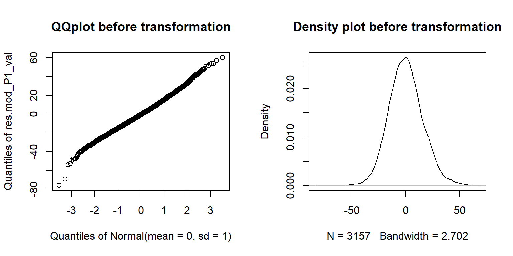
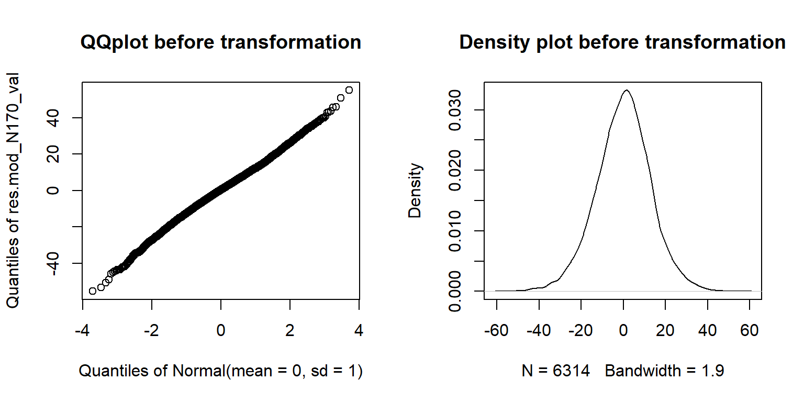
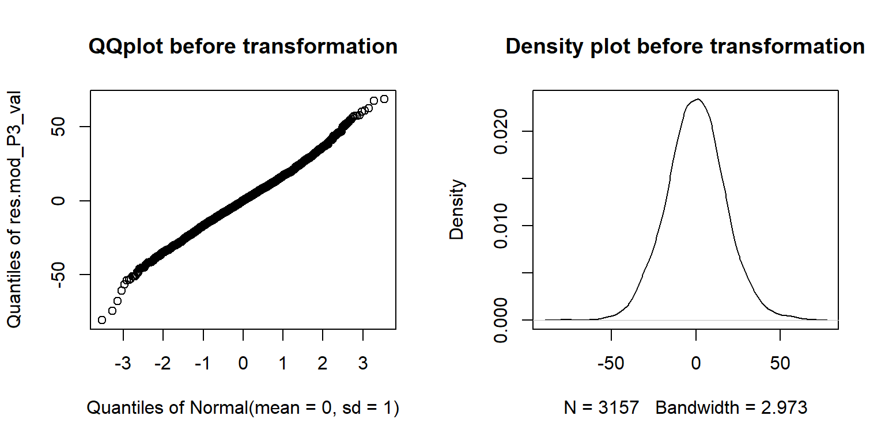
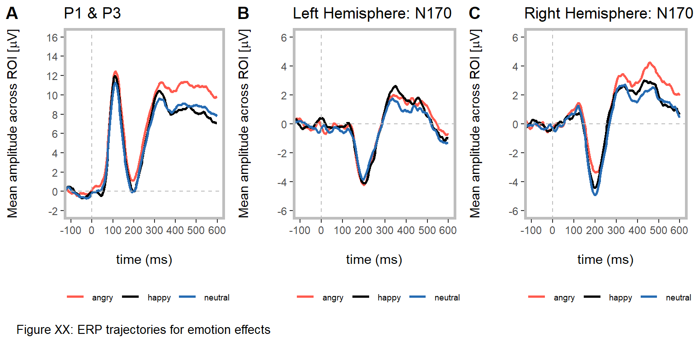
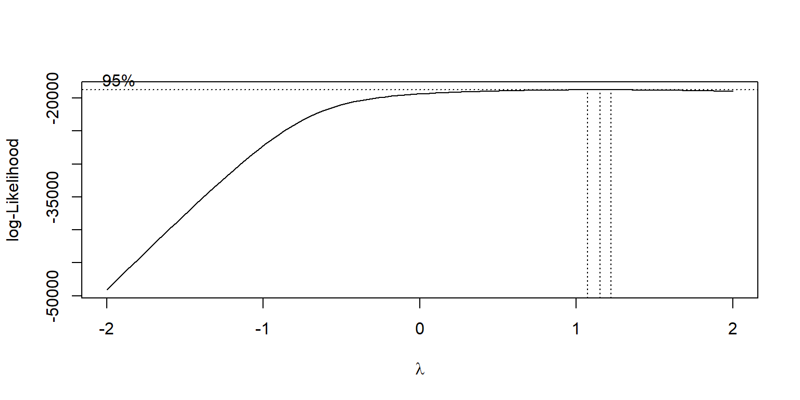
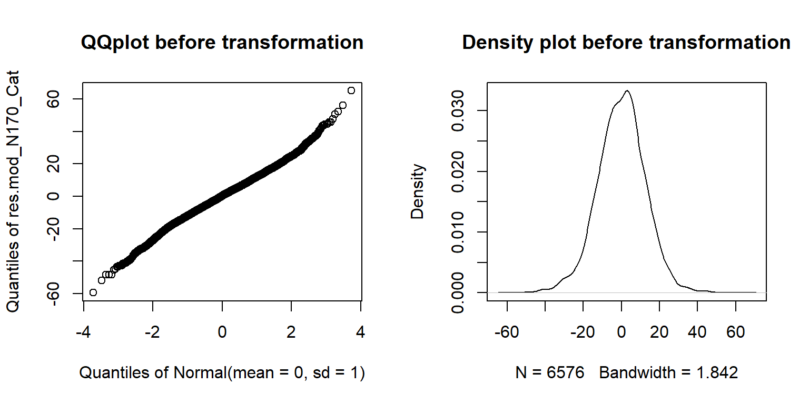
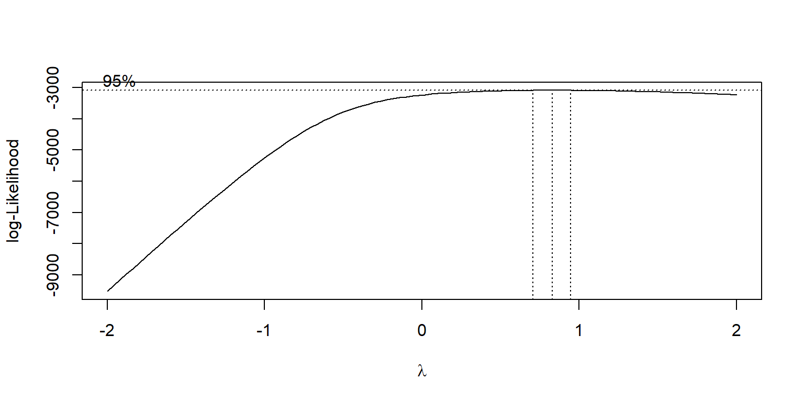
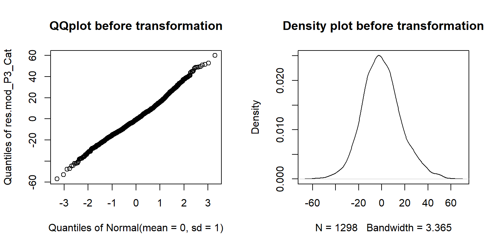

ERP measures
# Prepare EEG data --------------------------------------------------------
# Concatenate ERP table ----------------------------------------------------
# Get RT/Accuracy datafor EEG task
EEG_behav = readRDS("./data/EEG_behav_data.rds", refhook = NULL)
# Get stimulus information
Stim_data = readWorksheetFromFile("./data/Stim_Descr.xlsx",
sheet = 1,
startCol = 1,
endCol = 0)
# List files of EEG/RT within a folder and get number of participants
files_eeg = list.files(path="./data/ERPs", pattern = "*ind.csv")
nfiles = length(files_eeg)
# Combine single ERP trials of participants into data frame
for (i in 1:nfiles) {
# Get EEG file per subject
Subj_Data = read.csv(file=paste("./data/ERPs/",files_eeg[i], sep = ""), header=TRUE, sep=",")
# EEG table transformations -----------------------------------------------
# Add ID
Subj_Data$ID = substr(files_eeg [i],1,2)
# Re-format single conditions into numbers
Subj_Data$Condition =as.numeric(as.factor(Subj_Data$Condition))
# Reminder: (p=prime, c=comgruent, ic=incongruent)
# 1 - p_happy; 2 - p_neutral; 3 - p_angry
# 4 - c_happy; 5 - c_neutral; 6 - c_angry
# 7 - ic_happy; 8 - ic_neutral; 9 - ic_angry
# Add group conditions (prime, congruent, incongruent)
# Create grouping variable
grouping = data.frame(single=c(1:9),group_pcic=c(rep(1,3),rep(2,3),rep(3,3)),group_pt=c(rep(1,3),rep(2,6)))
# group_pcic = prime vs congruent vs incongruent, group_pt = prime vs target
# Match grouping variable with subject data
Subj_Data$Group_pcic = grouping$group_pcic[match(Subj_Data$Condition,grouping$single,nomatch = NA)]
Subj_Data$Group_pt = grouping$group_pt[match(Subj_Data$Condition,grouping$single,nomatch = NA)]
# Average ROIs
Subj_Data$mean_ROI_P1 = rowMeans(subset(Subj_Data,select = c(P1_PO3,P1_PO4,P1_O1,P1_O2,P1_Oz)),na.rm = TRUE)
Subj_Data$mean_ROI_N170l = rowMeans(subset(Subj_Data,select = c(N170l_TP7,N170l_CP5,N170l_P7)),na.rm = TRUE)
Subj_Data$mean_ROI_N170r = rowMeans(subset(Subj_Data,select = c(N170r_TP8,N170r_CP6,N170r_P8)),na.rm = TRUE)
Subj_Data$mean_ROI_P3 = rowMeans(subset(Subj_Data,select = c(P3_PO3,P3_PO4,P3_O1,P3_O2,P3_Oz)),na.rm = TRUE)
# Match EEG table with behavioral information ------------------------------------------------
# Function to map values together (RT values and ERP trial values): match ()
# Match RTs
Subj_Data$RTs = EEG_behav$RTs[match(Subj_Data$RT_Nr,EEG_behav$Trial_EEG,nomatch = NA)]
# Match Responses
Subj_Data$Response = EEG_behav$Response[match(Subj_Data$RT_Nr,EEG_behav$Trial_EEG,nomatch = NA)]
# Match Blocks
Subj_Data$Block = EEG_behav$Block[match(Subj_Data$RT_Nr,EEG_behav$Trial_EEG,nomatch = NA)]
# Match RT inclusion / exclusion criteria
Subj_Data$Exclude_smaller_250ms = EEG_behav$Exclude_smaller_250ms[match(Subj_Data$RT_Nr,EEG_behav$Trial_EEG,nomatch = NA)]
Subj_Data$Exclude_larger_7s = EEG_behav$Exclude_larger_7s[match(Subj_Data$RT_Nr,EEG_behav$Trial_EEG,nomatch = NA)]
Subj_Data$Exclude_MAD = EEG_behav$Exclude_MAD[match(Subj_Data$RT_Nr,EEG_behav$Trial_EEG,nomatch = NA)]
# Match randomization / stimulus type
Subj_Data$EEG_Random = EEG_behav$EEG_Random[match(Subj_Data$RT_Nr,EEG_behav$Trial_EEG,nomatch = NA)]
Subj_Data$Stim_Type = EEG_behav$Stim_Type[match(Subj_Data$RT_Nr,EEG_behav$Trial_EEG,nomatch = NA)]
# Match chronological age / working memory
Subj_Data$Age = EEG_behav$Age[match(Subj_Data$ID,EEG_behav$ID,nomatch = NA)]
Subj_Data$WM = EEG_behav$WM[match(Subj_Data$ID,EEG_behav$ID,nomatch = NA)]
# Combine all subject data ------------------------------------------
if (i==1) {
All_Subj = Subj_Data # first round: create all_subj data frame
} else {
All_Subj = rbind(All_Subj,Subj_Data) # add to all_subj data frame
}
# Clear previous
remove(Subj_Data)
}
# Remove EEG_Nr & RT_Nr
All_Subj = subset(All_Subj, select = -c(EEG_Nr,RT_Nr))
# ID to the front
All_Subj = All_Subj[, c(18,1:17,19:34)]
# Define ID as factor
All_Subj$ID = factor(All_Subj$ID)
# Remove NAs for amplitudes with no clear indication to a block
All_Subj=All_Subj[complete.cases(All_Subj[ , 28]),]
# Re-check NAs
sapply(All_Subj,function(x) sum(is.na(x)))
# De-select outlier participant
All_Subj = All_Subj[with(All_Subj, !(All_Subj$ID=="05")), ]3.2 ERP analysis
3.2.1 Valence effects
Assumption checks
LMM_P1: Normality of residuals
# Build model & check assumptions -----------------------------------------
# Select "face 1"
P1_Val = subset(All_Subj,Group_pt == 1)
# Prepare fixed factors
P1_Val$ID = as.factor(P1_Val$ID)
P1_Val$Stim_Type = as.factor(P1_Val$Stim_Type)
# Re-code emotion condition
P1_Val$Condition[P1_Val$Condition==1] = "happy"
P1_Val$Condition[P1_Val$Condition==2] = "neutral"
P1_Val$Condition[P1_Val$Condition==3] = "angry"
# Create factor & set neutral as baseline
P1_Val$Condition = factor(P1_Val$Condition, levels=c("neutral","happy","angry"))
# Set treatment contrast
contrasts(P1_Val$Condition) = contr.treatment(3)
# 1) Check properties of DV / residuals
# Check which transformation of DV is suitable
# we have positive and negative single trial values
# hence: add constant value prior to box-cox
P1_Val$Trans_P1 = P1_Val$mean_ROI_P1 + 1 - min(P1_Val$mean_ROI_P1)
# To make sure residuals follow ND: Calculate box-cox plot
boxcox(P1_Val$Trans_P1 ~ P1_Val$Condition) 
# Visualize normality assumption of residuals (without log transform)
mod_P1_val = lm(Trans_P1 ~ Condition, data=P1_Val)
res.mod_P1_val = residuals(mod_P1_val)
par(mfrow=c(1,2))
qqpl_mod_P1_val = qqPlot(res.mod_P1_val, main="QQplot before transformation")
norm_mod_P1_val = plot(density(res.mod_P1_val), main="Density plot before transformation") 
par(mfrow=c(1,1))LMM_P1: Random effect structure
# 3) Construct full model
# Add contrast columns
mm_c = model.matrix( ~ Condition, P1_Val)
# Attach to dataframe
P1_Val[,(ncol(P1_Val)+1):(ncol(P1_Val)+3)] = mm_c
names(P1_Val)[(ncol(P1_Val)-2):ncol(P1_Val)] = c("Mean","Hap_Neu", "Ang_Neu")
# Build model
mod_P1_val.lmer1 = lmer(mean_ROI_P1 ~
Hap_Neu + Ang_Neu + scale(Age) + scale(WM) +
(1 + Hap_Neu + Ang_Neu||ID) +
(1 + Hap_Neu + Ang_Neu||Stim_Type),
data = P1_Val,
control=lmerControl(calc.derivs = FALSE))
# 1st: check how many zero variance terms you got in random effects
summary(rePCA(mod_P1_val.lmer1))## $Stim_Type
## Importance of components:
## [,1] [,2] [,3]
## Standard deviation 0.0812 0.0217 0
## Proportion of Variance 0.9335 0.0665 0
## Cumulative Proportion 0.9335 1.0000 1
##
## $ID
## Importance of components:
## [,1] [,2] [,3]
## Standard deviation 0.355 0.0924 0.03350
## Proportion of Variance 0.929 0.0631 0.00829
## Cumulative Proportion 0.929 0.9917 1.00000 # 2nd: check which random terms explain the least variance
print(VarCorr(mod_P1_val.lmer1),comp = "Variance")## Groups Name Variance
## Stim_Type Ang_Neu 0.0931
## Stim_Type.1 Hap_Neu 1.3073
## Stim_Type.2 (Intercept) 0.0000
## ID Ang_Neu 1.6913
## ID.1 Hap_Neu 0.2223
## ID.2 (Intercept) 24.9065
## Residual 198.0550 # Remove intercepts/slopes based on variance check
mod_P1_val.lmer2 = lmer(mean_ROI_P1 ~
Hap_Neu + Ang_Neu + scale(Age) + scale(WM) +
(1 + Hap_Neu + Ang_Neu||ID) +
(0 + Hap_Neu||Stim_Type),
data = P1_Val,
control=lmerControl(calc.derivs = FALSE))
# Re-check the model
summary(rePCA(mod_P1_val.lmer2))## $Stim_Type
## Importance of components:
## [,1]
## Standard deviation 0.081
## Proportion of Variance 1.000
## Cumulative Proportion 1.000
##
## $ID
## Importance of components:
## [,1] [,2] [,3]
## Standard deviation 0.355 0.0938 0.000558
## Proportion of Variance 0.935 0.0652 0.000000
## Cumulative Proportion 0.935 1.0000 1.000000 print(VarCorr(mod_P1_val.lmer2),comp = "Variance")## Groups Name Variance
## Stim_Type Hap_Neu 1.2991677
## ID Ang_Neu 1.7416634
## ID.1 Hap_Neu 0.0000617
## ID.2 (Intercept) 24.9577644
## Residual 198.1225649 # Likelihood ratio testing
# For ID
mod_P1_val.lmer3 = lmer(mean_ROI_P1 ~
Hap_Neu + Ang_Neu + scale(Age) + scale(WM) +
(1 |ID) +
(0 + Hap_Neu + Ang_Neu||Stim_Type),
data = P1_Val,
control=lmerControl(calc.derivs = FALSE))
# Calculate ANOVA
anova(mod_P1_val.lmer2,mod_P1_val.lmer3)## Data: P1_Val
## Models:
## mod_P1_val.lmer3: mean_ROI_P1 ~ Hap_Neu + Ang_Neu + scale(Age) + scale(WM) + (1 |
## mod_P1_val.lmer3: ID) + (0 + Hap_Neu + Ang_Neu || Stim_Type)
## mod_P1_val.lmer2: mean_ROI_P1 ~ Hap_Neu + Ang_Neu + scale(Age) + scale(WM) + (1 +
## mod_P1_val.lmer2: Hap_Neu + Ang_Neu || ID) + (0 + Hap_Neu || Stim_Type)
## Df AIC BIC logLik deviance Chisq Chi Df
## mod_P1_val.lmer3 9 23332 23385 -11657 23314
## mod_P1_val.lmer2 10 23333 23393 -11657 23313 0.33 1
## Pr(>Chisq)
## mod_P1_val.lmer3
## mod_P1_val.lmer2 0.56 # Stimulus type
mod_P1_val.lmer4 = lmer(mean_ROI_P1 ~
Hap_Neu + Ang_Neu + scale(Age) + scale(WM) +
(1 + Ang_Neu||ID) +
(1 |Stim_Type),
data = P1_Val,
control=lmerControl(calc.derivs = FALSE))
# Calculate ANOVA
anova(mod_P1_val.lmer2,mod_P1_val.lmer4)## Data: P1_Val
## Models:
## mod_P1_val.lmer4: mean_ROI_P1 ~ Hap_Neu + Ang_Neu + scale(Age) + scale(WM) + (1 +
## mod_P1_val.lmer4: Ang_Neu || ID) + (1 | Stim_Type)
## mod_P1_val.lmer2: mean_ROI_P1 ~ Hap_Neu + Ang_Neu + scale(Age) + scale(WM) + (1 +
## mod_P1_val.lmer2: Hap_Neu + Ang_Neu || ID) + (0 + Hap_Neu || Stim_Type)
## Df AIC BIC logLik deviance Chisq Chi Df
## mod_P1_val.lmer4 9 23331 23385 -11657 23313
## mod_P1_val.lmer2 10 23333 23393 -11657 23313 0.29 1
## Pr(>Chisq)
## mod_P1_val.lmer4
## mod_P1_val.lmer2 0.59 # Final model
mod_P1_val.lmer4 = lmer(mean_ROI_P1 ~
Hap_Neu + Ang_Neu + scale(Age) + scale(WM) +
(1 |ID) +
(1 |Stim_Type),
data = P1_Val,
control=lmerControl(calc.derivs = FALSE))LMM_P1: Homoscedasticity
# 4) Check homoscedasticity
# Whether residuals are equally distributed along regression line
plot(fitted(mod_P1_val.lmer4), residuals(mod_P1_val.lmer4))
abline(0, 0) 
LMM_N170: Normality of residuals
# Transform dataset so that left/right hemisphere are accounted for
N170_Val = gather (All_Subj, Elect_site, N170_Amplitude, mean_ROI_N170l:mean_ROI_N170r, factor_key = TRUE)
# Add variable name
N170_Val$Elect_site = as.character(N170_Val$Elect_site)
N170_Val$Elect_site[N170_Val$Elect_site == "mean_ROI_N170l"] = 'left'
N170_Val$Elect_site[N170_Val$Elect_site == "mean_ROI_N170r"] = "right"
# Prepare fixed factors
N170_Val$ID = as.factor(N170_Val$ID)
N170_Val$Stim_Type = as.factor(N170_Val$Stim_Type)
N170_Val$Elect_site = factor(N170_Val$Elect_site)
# Select primes
N170_Val = subset(N170_Val,Group_pt == 1)
# Re-code values for emotion variable
N170_Val$Condition[N170_Val$Condition==1] = "happy"
N170_Val$Condition[N170_Val$Condition==2] = "neutral"
N170_Val$Condition[N170_Val$Condition==3] = "angry"
# Create factor, get neutral as baseline
N170_Val$Condition = factor(N170_Val$Condition, levels=c("neutral","happy","angry"))
# Set treatment contrast
(contrasts(N170_Val$Condition) = contr.treatment(3))
# Set contrast for hemisphere
(contrasts(N170_Val$Elect_site) = contr.sum(2)/2)
# 1) Check properties of DV / residuals
# Check which transformation of DV is suitable
# we have positive and negative single trial values
# hence: add constant value prior to box-cox
N170_Val$Trans_N170 = N170_Val$N170_Amplitude + 1 - min(N170_Val$N170_Amplitude)
# To make sure residuals follow ND: Calculate box-cox plot
boxcox(N170_Val$Trans_N170 ~ N170_Val$Condition) 
# Visualize normality assumption of residuals (without log transform)
mod_N170_val = lm(Trans_N170 ~ Condition, data=N170_Val)
res.mod_N170_val = residuals(mod_N170_val)
par(mfrow=c(1,2))
qqpl_mod_N170_val = qqPlot(res.mod_N170_val, main="QQplot before transformation")
norm_mod_N170_val = plot(density(res.mod_N170_val), main="Density plot before transformation") 
par(mfrow=c(1,1)) LMM_N170: Random effect structure
# 3) Construct full model
# Add contrast columns
mm_c = model.matrix( ~ Condition + Elect_site + Condition*Elect_site, N170_Val)
# Attach to dataframe
N170_Val[,(ncol(N170_Val)+1):(ncol(N170_Val)+6)] = mm_c
names(N170_Val)[(ncol(N170_Val)-5):ncol(N170_Val)] = c("Mean", "Hap_Neu", "Ang_Neu", "Elect_site", "Hap_NeuxElect_site", "Ang_NeuxElect_site")
# Get model
mod_N170_val.lmer1 = lmer(N170_Amplitude ~
Hap_Neu + Ang_Neu+ Hap_NeuxElect_site + Ang_NeuxElect_site + scale(Age) + scale(WM) +
(1 + Hap_Neu + Ang_Neu + Hap_NeuxElect_site + Ang_NeuxElect_site + Elect_site||ID) +
(1 + Hap_Neu + Ang_Neu + Hap_NeuxElect_site + Ang_NeuxElect_site + Elect_site||Stim_Type),
data = N170_Val,
control=lmerControl(calc.derivs = FALSE))
# 1st: check how many zero variance terms you got in random effects
summary(rePCA(mod_N170_val.lmer1))## $Stim_Type
## Importance of components:
## [,1] [,2] [,3] [,4] [,5]
## Standard deviation 0.000756 0.000358 0.0000584 0 0
## Proportion of Variance 0.812930 0.182230 0.0048500 0 0
## Cumulative Proportion 0.812930 0.995150 1.0000000 1 1
## [,6] [,7]
## Standard deviation 0 0
## Proportion of Variance 0 0
## Cumulative Proportion 1 1
##
## $ID
## Importance of components:
## [,1] [,2] [,3] [,4] [,5]
## Standard deviation 0.247 0.238 0.138 0.0975 0.0709
## Proportion of Variance 0.403 0.374 0.127 0.0630 0.0333
## Cumulative Proportion 0.403 0.777 0.904 0.9666 1.0000
## [,6] [,7]
## Standard deviation 0.000535 0
## Proportion of Variance 0.000000 0
## Cumulative Proportion 1.000000 1 # 2nd: check which random terms explain the least variance
print(VarCorr(mod_N170_val.lmer1),comp = "Variance")## Groups Name Variance Corr
## Stim_Type Elect_siteleft 0.0000005173
## Elect_siteright 0.0000000028 1.00
## Stim_Type.1 Ang_NeuxElect_site 0.0000195534
## Stim_Type.2 Hap_NeuxElect_site 0.0000872300
## Stim_Type.3 Ang_Neu 0.0000000000
## Stim_Type.4 Hap_Neu 0.0000000000
## Stim_Type.5 (Intercept) 0.0000000000
## ID Elect_siteleft 6.7855707893
## Elect_siteright 5.4108726248 -0.51
## ID.1 Ang_NeuxElect_site 0.7679492567
## ID.2 Hap_NeuxElect_site 1.4497871651
## ID.3 Ang_Neu 0.0000000000
## ID.4 Hap_Neu 0.0000436593
## ID.5 (Intercept) 8.6095643363
## Residual 152.5996257761 # Improved model
mod_N170_val.lmer2 = lmer(N170_Amplitude ~
Hap_Neu + Ang_Neu + Hap_NeuxElect_site + Ang_NeuxElect_site + scale(Age) + scale(WM) +
(1 |ID),
data = N170_Val,
control=lmerControl(calc.derivs = FALSE))
# Re-check the model
summary(rePCA(mod_N170_val.lmer2))## $ID
## Importance of components:
## [,1]
## Standard deviation 0.254
## Proportion of Variance 1.000
## Cumulative Proportion 1.000 print(VarCorr(mod_N170_val.lmer2),comp = "Variance")## Groups Name Variance
## ID (Intercept) 10.1
## Residual 156.6LMM_N170: Homoscedasticity
# 4) Check homoscedasticity
# Whether residuals are equally distributed along regression line
plot(fitted(mod_N170_val.lmer2), residuals(mod_N170_val.lmer2))
abline(0, 0) 
LMM_P3: Normality of residuals
# Build model & check assumptions ---------------------------------------
# Select primes
P3_Val = subset(All_Subj, Group_pt == 1)
# Prepare fixed factors
P3_Val$ID = as.factor(P3_Val$ID)
P3_Val$Stim_Type = as.factor(P3_Val$Stim_Type)
# Re-Name values of emotion condition
P3_Val$Condition[P3_Val$Condition==1] = "happy"
P3_Val$Condition[P3_Val$Condition==2] = "neutral"
P3_Val$Condition[P3_Val$Condition==3] = "angry"
# Create factor, get neutral as baseline
P3_Val$Condition = factor(P3_Val$Condition, levels=c("neutral","happy","angry"))
# Set treatment contrast
(contrasts(P3_Val$Condition) = contr.treatment(3))
# 1) Check properties of DV / residuals
# Check which transformation of DV is suitable
# we have positive and negative single trial values
# hence: add constant value prior to box-cox
P3_Val$Trans_P3 = P3_Val$mean_ROI_P3 + 1 - min(P3_Val$mean_ROI_P3)
# To make sure residuals follow ND: Calculate box-cox plot
boxcox(P3_Val$Trans_P3 ~ P3_Val$Condition) 
# Visualize normality assumption of residuals (without log transform)
mod_P3_val = lm(Trans_P3 ~ Condition, data=P3_Val)
res.mod_P3_val = residuals(mod_P3_val)
par(mfrow=c(1,2))
qqpl_mod_P3_val = qqPlot(res.mod_P3_val, main="QQplot before transformation")
norm_mod_P3_val = plot(density(res.mod_P3_val), main="Density plot before transformation") 
par(mfrow=c(1,1))LMM_P3: Random effect structure
# 3) Construct full model
# Add contrast columns
mm_c = model.matrix( ~ Condition, P3_Val)
# Attach to dataframe
P3_Val[,(ncol(P3_Val)+1):(ncol(P3_Val)+3)] = mm_c
names(P3_Val)[(ncol(P3_Val)-2):ncol(P3_Val)] = c("Mean","Hap_Neu", "Ang_Neu")
# Get model
mod_P3_val.lmer1 = lmer(mean_ROI_P3 ~
Hap_Neu + Ang_Neu + scale(Age) + scale(WM) +
(1 + Hap_Neu + Ang_Neu||ID) +
(1 + Hap_Neu + Ang_Neu||Stim_Type),
data = P3_Val,
control=lmerControl(calc.derivs = FALSE))
# 1st: check how many zero variance terms you got in random effects
summary(rePCA(mod_P3_val.lmer1))## $Stim_Type
## Importance of components:
## [,1] [,2] [,3]
## Standard deviation 0.0352 0.0327 0.0000431
## Proportion of Variance 0.5363 0.4637 0.0000000
## Cumulative Proportion 0.5363 1.0000 1.0000000
##
## $ID
## Importance of components:
## [,1] [,2] [,3]
## Standard deviation 0.325 0.00558 0.0000293
## Proportion of Variance 1.000 0.00029 0.0000000
## Cumulative Proportion 1.000 1.00000 1.0000000 # 2nd: check which random terms explain the least variance
print(VarCorr(mod_P3_val.lmer1),comp = "Variance")## Groups Name Variance
## Stim_Type Ang_Neu 0.296923659
## Stim_Type.1 Hap_Neu 0.000000516
## Stim_Type.2 (Intercept) 0.343408974
## ID Ang_Neu 0.008640992
## ID.1 Hap_Neu 0.000000238
## ID.2 (Intercept) 29.397507634
## Residual 277.592363474 # Improved model
mod_P3_val.lmer2 = lmer(mean_ROI_P3 ~
Hap_Neu + Ang_Neu + scale(Age) + scale(WM) +
(1 | ID) +
(1 + Ang_Neu||Stim_Type),
data = P3_Val,
control=lmerControl(calc.derivs = FALSE))
# Re-check the model
summary(rePCA(mod_P3_val.lmer2))## $Stim_Type
## Importance of components:
## [,1] [,2]
## Standard deviation 0.0353 0.0325
## Proportion of Variance 0.5411 0.4589
## Cumulative Proportion 0.5411 1.0000
##
## $ID
## Importance of components:
## [,1]
## Standard deviation 0.325
## Proportion of Variance 1.000
## Cumulative Proportion 1.000 print(VarCorr(mod_P3_val.lmer2),comp = "Variance")## Groups Name Variance
## Stim_Type Ang_Neu 0.293
## Stim_Type.1 (Intercept) 0.346
## ID (Intercept) 29.371
## Residual 277.595 # Likelihood ratio testing
# Stimulus type
mod_P3_val.lmer3 = lmer(mean_ROI_P3 ~
Hap_Neu + Ang_Neu + scale(Age) + scale(WM) +
(1 |ID) +
(1 |Stim_Type),
data = P3_Val,
control=lmerControl(calc.derivs = FALSE))
# Calculate ANOVA
anova(mod_P3_val.lmer2, mod_P3_val.lmer3)## Data: P3_Val
## Models:
## mod_P3_val.lmer3: mean_ROI_P3 ~ Hap_Neu + Ang_Neu + scale(Age) + scale(WM) + (1 |
## mod_P3_val.lmer3: ID) + (1 | Stim_Type)
## mod_P3_val.lmer2: mean_ROI_P3 ~ Hap_Neu + Ang_Neu + scale(Age) + scale(WM) + (1 |
## mod_P3_val.lmer2: ID) + (1 + Ang_Neu || Stim_Type)
## Df AIC BIC logLik deviance Chisq Chi Df
## mod_P3_val.lmer3 8 24282 24330 -12133 24266
## mod_P3_val.lmer2 9 24284 24338 -12133 24266 0 1
## Pr(>Chisq)
## mod_P3_val.lmer3
## mod_P3_val.lmer2 0.96 # Final model
mod_P3_val.lmer4 = lmer(mean_ROI_P3 ~
Hap_Neu + Ang_Neu + scale(Age) + scale(WM) +
(1 |ID) +
(1 |Stim_Type),
data = P3_Val,
control=lmerControl(calc.derivs = FALSE))LMM_P3: Homoscedasticity
# 4) Check homoscedasticity
# Whether residuals are equally dsitributed along regression line
plot(fitted(mod_P3_val.lmer4), residuals(mod_P3_val.lmer4))
abline(0, 0) 
3.2.1.1 P1
We tested whether P1 amplitudes were larger for emotional (angry or happy) in comparison to neutral stimuli at “face 1” (See Figure X A). The best-fitting model included random intercepts for participants and stimulus. P1 Amplitudes at “face 1” were significantly larger for angry in comparison to neutral facial expressions (\(\hat{β}\) = 1.6, p <0.05). No difference was found for the contrast of happy vs neutral faces (\(\hat{β}\) = 0.99, p = 0.12). None of the covariates reached significance (age: \(\hat{β}\) = 1.16, p = 0.25; working memory: \(\hat{β}\) = -0.1, p = 0.92; see Table X).
# Load data
Prime_data = read.csv("./data/ERPs/ROI_P1_prime.csv",header = TRUE)
# De-select participants
Prime_data = Prime_data[with(Prime_data, !(Prime_data$ID=="05")), ]
# Select time window
Prime_data = Prime_data[(Prime_data$Time >= -200)& (Prime_data$Time <= 600),]
# Rename conditions
Prime_data$Condition[Prime_data$Condition == 1]='happy';
Prime_data$Condition[Prime_data$Condition == 2]='neutral';
Prime_data$Condition[Prime_data$Condition == 3]='angry';
# Select conditions of interest
Prime_data_all_emo_sep = Prime_data[(Prime_data$Condition == 'happy') | (Prime_data$Condition == 'angry') | (Prime_data$Condition == 'neutral'),]
# Plot data
P1_val_traj = ggplot(Prime_data_all_emo_sep,aes(Time,ROI_Average))+
ggtitle("P1 & P3") +
theme(panel.background = element_blank(), panel.border = element_rect(colour = "grey", fill=NA, size=2),
axis.title.y = element_text(margin = margin(t = 0, r = 20, b = 0, l = 0)), legend.text=element_text(size=7),
legend.key = element_rect(fill = "white"))+
stat_summary(fun.y = mean, geom = "line", size = 1, linetype = "solid", aes(colour= Condition))+
scale_color_discrete(guide = guide_legend(override.aes = list(color = "white")))+
#scale_color_OkabeIto()+
scale_colour_manual(values = c("#FF5B4F","#000000","#276CB3"))+
#theme(axis.title.x=element_blank())+ # to turn of x-axis title
#theme(axis.title.y=element_blank())+ # to turn of y-axis title
#theme(text=element_text(family="Coves", face="bold", size=18))+
labs(x = "\ntime (ms)",y = expression(paste("Mean amplitude across ROI [",mu,"V]")),colour = "")+
theme(legend.position="bottom") +
coord_cartesian(ylim=c(-2, 16),xlim=c(-100,600)) +
scale_y_continuous(breaks=seq(-2,16,2))+
scale_x_continuous(breaks=seq(-100,600,100))+
geom_vline(xintercept = 0, linetype = "dashed",colour="grey" )+
geom_hline(yintercept = 0, linetype = "dashed",colour="grey")
# N170 trajectories
# Load data
Prime_data_l = read.csv("./data/ERPs/left_ROI_N170_prime.csv",header = TRUE)
Prime_data_r = read.csv("./data/ERPs/right_ROI_N170_prime.csv",header = TRUE)
# LEFT HEMISPHERE
# Select time windows
Prime_data_l = Prime_data_l[(Prime_data_l$Time >= -200)& (Prime_data_l$Time <= 600),]
# De-select participants
Prime_data_l = Prime_data_l[with(Prime_data_l, !(Prime_data_l$ID=="05")), ]
# Rename conditions
Prime_data_l$Condition[Prime_data_l$Condition == 1]='happy';
Prime_data_l$Condition[Prime_data_l$Condition == 2]='neutral';
Prime_data_l$Condition[Prime_data_l$Condition == 3]='angry';
# Select conditions of interest
Prime_data_all_emo_sep_l = Prime_data_l[(Prime_data_l$Condition == 'happy') | (Prime_data_l$Condition == 'angry') | (Prime_data_l$Condition == 'neutral'),]
# Plot data
N170l_val_traj = ggplot(Prime_data_all_emo_sep_l,aes(Time,ROI_Average))+
ggtitle("Left Hemisphere: N170")+
theme(panel.background = element_blank(),panel.border = element_rect(colour = "grey", fill=NA, size=2),
axis.title.y = element_text(margin = margin(t = 0, r = 20, b = 0, l = 0)), legend.text=element_text(size=7),
legend.key = element_rect(fill = "white"))+
stat_summary(fun.y = mean,geom = "line",size = 1, linetype = "solid", aes(colour= Condition))+
#scale_color_OkabeIto()+
scale_colour_manual(values = c("#FF5B4F","#000000","#276CB3"))+
#theme(text=element_text(family="Coves", face="bold", size=15))+
#theme(axis.title.x=element_blank())+ # to turn of x-axis title
#theme(axis.title.y=element_blank())+ # to turn of y-axis title
#theme(legend.position="none")+ # to turn of legend
theme(legend.position="bottom") +
labs(x = "\ntime (ms)",y = expression(paste("Mean amplitude across ROI [",mu,"V]")),colour = "")+
coord_cartesian(ylim=c(-6,6),xlim=c(-100,600)) +
scale_y_continuous(breaks=seq(-6,6,2))+
scale_x_continuous(breaks=seq(-100,600,100))+
geom_vline(xintercept = 0,linetype = "dashed",colour="grey" )+
geom_hline(yintercept = 0,linetype = "dashed",colour="grey")
# RIGHT HEMISPHERE
# Select time window
Prime_data_r = Prime_data_r[(Prime_data_r$Time >= -200)& (Prime_data_r$Time <= 600),]
# De-select participants
Prime_data_r = Prime_data_r[with(Prime_data_r, !(Prime_data_r$ID=="05")), ]
# Rename conditions
Prime_data_r$Condition[Prime_data_r$Condition == 1]='happy';
Prime_data_r$Condition[Prime_data_r$Condition == 2]='neutral';
Prime_data_r$Condition[Prime_data_r$Condition == 3]='angry';
# Select conditions of interest
Prime_data_all_emo_sep_r = Prime_data_r[(Prime_data_r$Condition == 'happy') | (Prime_data_r$Condition == 'angry') | (Prime_data_r$Condition == 'neutral'),]
# Plot data
N170r_val_traj = ggplot(Prime_data_all_emo_sep_r,aes(Time,ROI_Average))+
ggtitle("Right Hemisphere: N170")+
theme(panel.background = element_blank(),panel.border = element_rect(colour = "grey", fill=NA, size=2),
axis.title.y = element_text(margin = margin(t = 0, r = 20, b = 0, l = 0)), legend.text=element_text(size=7),
legend.key = element_rect(fill = "white"))+
stat_summary(fun.y = mean, geom = "line",size = 1, linetype = "solid", aes(colour= Condition))+
# scale_color_OkabeIto()+
scale_colour_manual(values = c("#FF5B4F","#000000","#276CB3"))+
#theme(text=element_text(family="Coves", face="bold", size=15))+
#theme(axis.title.x=element_blank())+ # to turn of x-axis title
#theme(axis.title.y=element_blank())+ # to turn of y-axis title
#theme(legend.position="none")+ # to turn of legend
theme(legend.position="bottom")+
labs(x = "\ntime (ms)",y = expression(paste("Mean amplitude across ROI [",mu,"V]")),colour = "")+
coord_cartesian(ylim=c(-6,6),xlim=c(-100,600)) +
scale_y_continuous(breaks=seq(-6,6,2))+
scale_x_continuous(breaks=seq(-100,600,100))+
geom_vline(xintercept = 0,linetype = "dashed",colour="grey" )+
geom_hline(yintercept = 0,linetype = "dashed",colour="grey")
# Combine plots
combine_plots(P1_val_traj, N170l_val_traj, N170r_val_traj,
ncol = 3, nrow=1,
labels = c("A", "B", "C"),
caption.color = "black",
caption.vjust = 0,
caption.hjust = 1.3,
caption.text = "Figure XX: ERP trajectories for emotion effects")
3.2.1.2 N170
We also checked whether emotional faces elicited larger N170 amplitudes compared to neutral faces at “face 1” (See Figure X B,C). As previous research has shown that differences in N170 amplitudes across hemispheres can be found in developmental populations (e.g., Adolphs, 2002), we also included hemisphere as a fixed effect factor (left vs right hemisphere). The best fitting model included participant as random intercept. In contrast to our hypothesis, no differences between happy or angry faces in contrast to neutral faces were detected (happy-neutral: \(\hat{β}\) = -0.08, p = 0.84; angry-neutral: \(\hat{β}\) = 0.57, p = 0.16). None of the interactions of hemisphere with the emotion contrasts, nor covariates reached significance (see Table XX).
# Load topography information
Topo_Emo = read.csv(file="./data/ERPs/ERPs_Topo_Emotions.csv", header=TRUE, sep=",")
# Exclude participant
Topo_Emo = Topo_Emo[with(Topo_Emo, !(Topo_Emo$ID==5)), ]
# Re-name to fit topoplot function
names(Topo_Emo)[names(Topo_Emo) == "Time"] = "time"
# Change from wide to long format for electrodes
Topo_Emo = gather(Topo_Emo, electrode, amplitude, Fp1:Oz, factor_key=TRUE)
# Rename A1/A2
names(Topo_Emo)[names(Topo_Emo) == "A1"] <- "TP9"
names(Topo_Emo)[names(Topo_Emo) == "A2"] <- "TP10"
# Plot topoplots for happy
Topo_Emo_Hap = subset(Topo_Emo, Condition == 1)
# Plot topoplots for neutral
Topo_Emo_Neu = subset(Topo_Emo, Condition == 2)
# Plot topoplots for angry
Topo_Emo_Ang = subset(Topo_Emo, Condition == 3)
# P1s
P1_neu=topoplot(Topo_Emo_Neu, time_lim = c(80, 120),interp_limit = "head", limits = c(-5,15))+
ggtitle("P1 (80-120 ms)")+
theme(plot.title = element_text(hjust = 0.5, face = "bold"))+
annotate(geom="text", x=-1.05, y=-1, label="neutral", size=3)
P1_hap=topoplot(Topo_Emo_Hap, time_lim = c(80, 120),interp_limit = "head", limits = c(-5,15))+
ggtitle("")+
theme(plot.title = element_text(hjust = 0.5, face = "bold"))+
annotate(geom="text", x=-1.05, y=-1, label="happy", size=3)
P1_ang=topoplot(Topo_Emo_Ang, time_lim = c(80, 120),interp_limit = "head", limits = c(-5,15))+
ggtitle("")+
theme(plot.title = element_text(hjust = 0.5, face = "bold"))+
annotate(geom="text", x=-1.05, y=-1, label="angry", size=3)
# N170s
N170_neu=topoplot(Topo_Emo_Neu, time_lim = c(170, 230),interp_limit = "head", limits = c(-5,5))+
ggtitle("N170 (170-230 ms)")+
theme(plot.title = element_text(hjust = 0.5, face = "bold"))+
annotate(geom="text", x=-1.05, y=-1, label="neutral", size=3)
N170_hap=topoplot(Topo_Emo_Hap, time_lim = c(170, 230),interp_limit = "head", limits = c(-5,5))+
ggtitle("")+
theme(plot.title = element_text(hjust = 0.5, face = "bold"))+
annotate(geom="text", x=-1.05, y=-1, label="happy", size=3)
N170_ang=topoplot(Topo_Emo_Ang, time_lim = c(170, 230),interp_limit = "head", limits = c(-5,5))+
ggtitle("")+
theme(plot.title = element_text(hjust = 0.5, face = "bold"))+
annotate(geom="text", x=-1.05, y=-1, label="angry", size=3)
# P3s
P3_neu=topoplot(Topo_Emo_Neu, time_lim = c(300, 600),interp_limit = "head",limits = c(-5,10))+
ggtitle("P3 (300-600 ms)")+
theme(plot.title = element_text(hjust = 0.5, face = "bold"))+
annotate(geom="text", x=-1.05, y=-1, label="neutral", size=3)
P3_hap=topoplot(Topo_Emo_Hap, time_lim = c(300, 600),interp_limit = "head",limits = c(-5,10))+
ggtitle("")+
theme(plot.title = element_text(hjust = 0.5, face = "bold"))+
annotate(geom="text", x=-1.05, y=-1, label="happy", size=3)
P3_ang=topoplot(Topo_Emo_Ang, time_lim = c(300, 600),interp_limit = "head", limits = c(-5,10))+
ggtitle("")+
theme(plot.title = element_text(hjust = 0.5, face = "bold"))+
annotate(geom="text", x=-1.05, y=-1, label="angry", size=3)
# Combine plots
combine_plots(P1_neu, N170_neu, P3_neu,
P1_hap, N170_hap, P3_hap,
P1_ang, N170_ang, P3_ang,
ncol = 3,
caption.text = "Figure XX: Topographical maps of emotion condition",
caption.color = "black",
caption.hjust = 0.5)
3.2.1.3 P3
Similar to P1 and N170, we also tested whether P3 amplitudes were larger for emotional in contrast to neutral faces at “face 1” (See Figure X A). The LMM with the best model fit was comprised of random intercepts for participant and stimulus. In line with our hypothesis, angry faces elicited larger amplitudes compared to neutral faces (\(\hat{β}\) = 1.67, p <0.05). No difference, however, was found between happy and neutral faces (\(\hat{β}\) = 0.71, p = 0.35). Covariates showed no significant results (See Table XX).
labels = c("Intercept","Happy vs Neutral", "Angry vs Neutral", "Age", "Working Memory","HvsN X ROI", "AvsN X ROI")
# Create table
tab_model(mod_P1_val.lmer4, mod_N170_val.lmer2, mod_P3_val.lmer4,
pred.labels=labels,
show.se=TRUE, show.stat=TRUE, show.ci = FALSE, string.se = "SE",
show.re.var=FALSE, show.obs=FALSE,
emph.p = TRUE, dv.labels=c("P1 Amplitudes","N170 Amplitudes","P3 Amplitudes"),
show.icc = FALSE)| P1 Amplitudes | N170 Amplitudes | P3 Amplitudes | ||||||||||
|---|---|---|---|---|---|---|---|---|---|---|---|---|
| Predictors | Estimates | SE | Statistic | p | Estimates | SE | Statistic | p | Estimates | SE | Statistic | p |
| Intercept | 12.52 | 1.05 | 11.90 | <0.001 | -7.03 | 0.67 | -10.56 | <0.001 | 8.04 | 1.16 | 6.92 | <0.001 |
| Happy vs Neutral | 0.99 | 0.64 | 1.55 | 0.121 | -0.08 | 0.40 | -0.20 | 0.843 | 0.71 | 0.76 | 0.94 | 0.349 |
| Angry vs Neutral | 1.60 | 0.65 | 2.46 | 0.014 | 0.57 | 0.41 | 1.39 | 0.164 | 1.67 | 0.77 | 2.17 | 0.030 |
| Age | 1.16 | 0.98 | 1.18 | 0.239 | 0.00 | 0.62 | 0.00 | 0.998 | 1.94 | 1.07 | 1.81 | 0.070 |
| Working Memory | -0.10 | 1.00 | -0.10 | 0.922 | 0.11 | 0.63 | 0.17 | 0.867 | 0.20 | 1.09 | 0.19 | 0.852 |
| HvsN X ROI | -0.51 | 0.57 | -0.89 | 0.371 | ||||||||
| AvsN X ROI | -0.52 | 0.59 | -0.89 | 0.372 | ||||||||
| N | 28 ID | 28 ID | 28 ID | |||||||||
| 72 Stim_Type | 72 Stim_Type | |||||||||||
| Marginal R2 / Conditional R2 | 0.009 / NA | 0.001 / 0.061 | 0.014 / 0.110 | |||||||||
Table XX: Results of LMMs for contrasting emotions
3.2.2 Categorization effects
Assumption checks
LMM_P1: Normality of residuals
# Select correct responses
P1_Cat = subset(All_Subj, Response == 1)
# Select targets
P1_Cat = subset(P1_Cat,Group_pt == 2)
# Prepare fixed factors
P1_Cat$ID = as.factor(P1_Cat$ID)
P1_Cat$Stim_Type = as.factor(P1_Cat$Stim_Type)
# Define novel vs repeated trials
P1_Cat[P1_Cat$Group_pcic==2,]$Group_pcic = "repeated"
P1_Cat[P1_Cat$Group_pcic==3,]$Group_pcic = "novel"
# Create factor, get neutral as baseline
P1_Cat$Group_pcic = factor(P1_Cat$Group_pcic, levels=c("novel","repeated"))
# Set treatment contrast
(contrasts(P1_Cat$Group_pcic) = contr.sum(2)/2)
# 1) Check properties of DV / residuals
# Check which transformation of DV is suitable
# we have positive and negative single trial values
# hence: add constant value prior to box-cox
P1_Cat$Trans_P1 = P1_Cat$mean_ROI_P1 + 1 - min(P1_Cat$mean_ROI_P1)
# To make sure residuals follow ND: Calculate box-cox plot
boxcox(P1_Cat$Trans_P1 ~ P1_Cat$Group_pcic) # Visualize normality assumption of residuals (without log transform)
mod_P1_Cat = lm(Trans_P1 ~ Group_pcic, data=P1_Cat)
res.mod_P1_Cat = residuals(mod_P1_Cat)
par(mfrow=c(1,2))
qqpl_mod_P1_Cat = qqPlot(res.mod_P1_Cat, main="QQplot before transformation")
norm_mod_P1_Cat = plot(density(res.mod_P1_Cat), main="Density plot before transformation") 
par(mfrow=c(1,1))LMM_P1: Random effect structure
# 3) Construct full model
# Add contrast columns
mm_c = model.matrix( ~ Group_pcic, P1_Cat)
# Attach to dataframe
P1_Cat[,(ncol(P1_Cat)+1):(ncol(P1_Cat)+2)] = mm_c
names(P1_Cat)[(ncol(P1_Cat)-1):ncol(P1_Cat)] = c("Mean","Nov_Rep")
# Build model
mod_P1_cat.lmer1 = lmer(mean_ROI_P1 ~
Nov_Rep + scale(Age) + scale(WM) +
(1 + Nov_Rep||ID) +
(1 + Nov_Rep||Stim_Type),
data = P1_Cat,
control=lmerControl(calc.derivs = FALSE))
# 1st: check how many zero variance terms you got in random effects
summary(rePCA(mod_P1_cat.lmer1))## $Stim_Type
## Importance of components:
## [,1] [,2]
## Standard deviation 0.00016 0.000147
## Proportion of Variance 0.54028 0.459720
## Cumulative Proportion 0.54028 1.000000
##
## $ID
## Importance of components:
## [,1] [,2]
## Standard deviation 0.397 0.0000398
## Proportion of Variance 1.000 0.0000000
## Cumulative Proportion 1.000 1.0000000 # 2nd: check which random terms explain the least variance
print(VarCorr(mod_P1_cat.lmer1),comp = "Variance")## Groups Name Variance
## Stim_Type Nov_Rep 0.000004580
## Stim_Type.1 (Intercept) 0.000003897
## ID Nov_Rep 0.000000285
## ID.1 (Intercept) 28.358220635
## Residual 180.029310668 # Likelihood-ratio testing
# ID
mod_P1_cat.lmer2 = lmer(mean_ROI_P1 ~
Nov_Rep + scale(Age) + scale(WM) +
(1 | ID) +
(1 + Nov_Rep||Stim_Type),
data = P1_Cat,
control=lmerControl(calc.derivs = FALSE))
# Calculate ANOVA
anova(mod_P1_cat.lmer1, mod_P1_cat.lmer2)## Data: P1_Cat
## Models:
## mod_P1_cat.lmer2: mean_ROI_P1 ~ Nov_Rep + scale(Age) + scale(WM) + (1 | ID) + (1 +
## mod_P1_cat.lmer2: Nov_Rep || Stim_Type)
## mod_P1_cat.lmer1: mean_ROI_P1 ~ Nov_Rep + scale(Age) + scale(WM) + (1 + Nov_Rep ||
## mod_P1_cat.lmer1: ID) + (1 + Nov_Rep || Stim_Type)
## Df AIC BIC logLik deviance Chisq Chi Df
## mod_P1_cat.lmer2 8 9464 9505 -4724 9448
## mod_P1_cat.lmer1 9 9466 9512 -4724 9448 0 1
## Pr(>Chisq)
## mod_P1_cat.lmer2
## mod_P1_cat.lmer1 1 # Stim_Type
mod_P1_cat.lmer3 = lmer(mean_ROI_P1 ~
Nov_Rep + scale(Age) + scale(WM) +
(1 + Nov_Rep|| ID) +
(1 |Stim_Type),
data = P1_Cat,
control=lmerControl(calc.derivs = FALSE))
# Calculate ANOVA
anova(mod_P1_cat.lmer1, mod_P1_cat.lmer3)## Data: P1_Cat
## Models:
## mod_P1_cat.lmer3: mean_ROI_P1 ~ Nov_Rep + scale(Age) + scale(WM) + (1 + Nov_Rep ||
## mod_P1_cat.lmer3: ID) + (1 | Stim_Type)
## mod_P1_cat.lmer1: mean_ROI_P1 ~ Nov_Rep + scale(Age) + scale(WM) + (1 + Nov_Rep ||
## mod_P1_cat.lmer1: ID) + (1 + Nov_Rep || Stim_Type)
## Df AIC BIC logLik deviance Chisq Chi Df
## mod_P1_cat.lmer3 8 9464 9505 -4724 9448
## mod_P1_cat.lmer1 9 9466 9512 -4724 9448 0 1
## Pr(>Chisq)
## mod_P1_cat.lmer3
## mod_P1_cat.lmer1 1 # Final model
mod_P1_cat.lmer4 = lmer(mean_ROI_P1 ~
Nov_Rep + scale(Age) + scale(WM) +
(1|ID) +
(1|Stim_Type),
data = P1_Cat,
control=lmerControl(calc.derivs = FALSE))LMM_P1: Homoscedasticity
# 4) Check homoscedasticity
# Whether residuals are equally dsitributed along regression line
plot(fitted(mod_P1_cat.lmer4), residuals(mod_P1_cat.lmer4))
abline(0, 0) 
LMM_N170: Normality of residuals
# Select targets
N170_Cat = subset(All_Subj, Group_pt == 2)
# Define novel vs repeated trials
N170_Cat[N170_Cat$Group_pcic==2,]$Group_pcic = "repeated"
N170_Cat[N170_Cat$Group_pcic==3,]$Group_pcic = "novel"
# Separate data in left and right hemisphere
N170_Cat = gather (N170_Cat, Elect_site, N170_Amplitude, mean_ROI_N170l:mean_ROI_N170r, factor_key = TRUE)
N170_Cat$Elect_site = as.character(N170_Cat$Elect_site)
# Add variable name
N170_Cat$Elect_site[N170_Cat$Elect_site == "mean_ROI_N170l"] = 'left'
N170_Cat$Elect_site[N170_Cat$Elect_site == "mean_ROI_N170r"] = "right"
# Set contrast for elect site
N170_Cat$Elect_site = factor(N170_Cat$Elect_site)
contrasts(N170_Cat$Elect_site) = contr.sum(2)/2
# Factor random factors
N170_Cat$ID = as.factor(N170_Cat$ID)
N170_Cat$Stim_Type = as.factor(N170_Cat$Stim_Type)
# Create factor, get neutral as baseline
N170_Cat$Group_pcic = factor(N170_Cat$Group_pcic, levels=c("novel","repeated"))
# Set treatment contrast
(contrasts(N170_Cat$Group_pcic) = contr.sum(2)/2)
# 1) Check properties of DV / residuals
# Check which transformation of DV is suitable
# we have positive and negative single trial values
# hence: add constant value prior to box-cox
N170_Cat$Trans_N170 = N170_Cat$N170_Amplitude + 1 - min(N170_Cat$N170_Amplitude)
# To make sure residuals follow ND: Calculate box-cox plot
boxcox(N170_Cat$Trans_N170 ~ N170_Cat$Group_pcic) 
# Visualize normality assumption of residuals (without log transform)
mod_N170_Cat = lm(Trans_N170 ~ Group_pcic, data=N170_Cat)
res.mod_N170_Cat = residuals(mod_N170_Cat)
par(mfrow=c(1,2))
qqpl_mod_N170_Cat = qqPlot(res.mod_N170_Cat, main="QQplot before transformation")
norm_mod_N170_Cat = plot(density(res.mod_N170_Cat), main="Density plot before transformation") 
par(mfrow=c(1,1)) LMM_N170: Random effect structure
# 3) Construct full model
# Add contrast columns
mm_c = model.matrix( ~ Group_pcic + Elect_site + Condition*Elect_site, N170_Cat)
# Attach to dataframe
N170_Cat[,(ncol(N170_Cat)+1):(ncol(N170_Cat)+4)] = mm_c
names(N170_Cat)[(ncol(N170_Cat)-3):ncol(N170_Cat)] = c("Mean","Nov_Rep","Elect_site","Nov_RepxElect_site")
# Get model
mod_N170_cat.lmer1 = lmer(N170_Amplitude ~
Nov_Rep + Nov_RepxElect_site + Elect_site + scale(Age) + scale(WM) +
(1 + Nov_Rep + Nov_RepxElect_site + Elect_site||ID) +
(1 + Nov_Rep + Nov_RepxElect_site + Elect_site||Stim_Type),
data = N170_Cat,
control=lmerControl(calc.derivs = FALSE))
# 1st: check how many zero variance terms you got in random effects
summary(rePCA(mod_N170_cat.lmer1))## $Stim_Type
## Importance of components:
## [,1] [,2] [,3] [,4] [,5]
## Standard deviation 0.111 0.000107 0.0000606 0 0
## Proportion of Variance 1.000 0.000000 0.0000000 0 0
## Cumulative Proportion 1.000 1.000000 1.0000000 1 1
##
## $ID
## Importance of components:
## [,1] [,2] [,3] [,4] [,5]
## Standard deviation 0.298 0.270 0.0000665 0 0
## Proportion of Variance 0.549 0.451 0.0000000 0 0
## Cumulative Proportion 0.549 1.000 1.0000000 1 1 # 2nd: check which random terms explain the least variance
print(VarCorr(mod_N170_cat.lmer1),comp = "Variance")## Groups Name Variance Corr
## Stim_Type Elect_siteleft 0.000000000
## Elect_siteright 1.803620747 NaN
## Stim_Type.1 Nov_RepxElect_site 0.000000000
## Stim_Type.2 Nov_Rep 0.000001675
## Stim_Type.3 (Intercept) 0.000000534
## ID Elect_siteleft 0.000000000
## Elect_siteright 12.919710957 NaN
## ID.1 Nov_RepxElect_site 0.000000642
## ID.2 Nov_Rep 0.000000000
## ID.3 (Intercept) 10.596324489
## Residual 145.162934619 # Improved model
mod_N170_cat.lmer2 = lmer(N170_Amplitude ~
Nov_Rep + Nov_RepxElect_site + Elect_site + scale(Age) + scale(WM) +
(1 + Elect_site||ID),
data = N170_Cat,
control=lmerControl(calc.derivs = FALSE))
# Re-check variances
summary(rePCA(mod_N170_cat.lmer2))## $ID
## Importance of components:
## [,1] [,2] [,3]
## Standard deviation 0.309 0.212 0.153
## Proportion of Variance 0.582 0.275 0.143
## Cumulative Proportion 0.582 0.857 1.000 print(VarCorr(mod_N170_cat.lmer2),comp = "Variance")## Groups Name Variance Corr
## ID (Intercept) 3.42
## ID.1 Elect_siteleft 8.25
## Elect_siteright 12.24 0.31
## Residual 145.99 # Likelihood ratio testing
# ID
mod_N170_cat.lmer3 = lmer(N170_Amplitude ~
Nov_Rep + Nov_RepxElect_site + Elect_site + scale(Age) + scale(WM) +
(1 |ID),
data = N170_Cat,
control=lmerControl(calc.derivs = FALSE))
# Calculate ANOVA
anova(mod_N170_cat.lmer2 ,mod_N170_cat.lmer3 )## Data: N170_Cat
## Models:
## mod_N170_cat.lmer3: N170_Amplitude ~ Nov_Rep + Nov_RepxElect_site + Elect_site +
## mod_N170_cat.lmer3: scale(Age) + scale(WM) + (1 | ID)
## mod_N170_cat.lmer2: N170_Amplitude ~ Nov_Rep + Nov_RepxElect_site + Elect_site +
## mod_N170_cat.lmer2: scale(Age) + scale(WM) + (1 + Elect_site || ID)
## Df AIC BIC logLik deviance Chisq Chi Df
## mod_N170_cat.lmer3 8 46594 46648 -23289 46578
## mod_N170_cat.lmer2 11 46523 46597 -23251 46501 76.9 3
## Pr(>Chisq)
## mod_N170_cat.lmer3
## mod_N170_cat.lmer2 <0.0000000000000002 ***
## ---
## Signif. codes: 0 '***' 0.001 '**' 0.01 '*' 0.05 '.' 0.1 ' ' 1 # Final model
mod_N170_cat.lmer4 = lmer(N170_Amplitude ~
Nov_Rep + Nov_RepxElect_site + Elect_site + scale(Age) + scale(WM) +
(1 + Elect_site||ID),
data = N170_Cat,
control=lmerControl(calc.derivs = FALSE))LMM_N170: Homoscedasticity
# 4) Check homoscedasticity
# Whether residuals are equally dsitributed along regression line
plot(fitted(mod_N170_cat.lmer4), residuals(mod_N170_cat.lmer4))
abline(0, 0) 
LMM_P3: Normality of residuals
# Build model & check assumptions -----------------------------------------
# Correct responses
P3_Cat = subset(All_Subj, Response == 1)
# Factor random factors
P3_Cat$ID = as.factor(P3_Cat$ID)
P3_Cat$Stim_Type = as.factor(P3_Cat$Stim_Type)
# Select targets
P3_Cat = subset(P3_Cat,Group_pt == 2)
# Define novel vs repeated trials
P3_Cat[P3_Cat$Group_pcic==2,]$Group_pcic = "repeated"
P3_Cat[P3_Cat$Group_pcic==3,]$Group_pcic = "novel"
# Create factor, get neutral as baseline
P3_Cat$Group_pcic = factor(P3_Cat$Group_pcic, levels=c("novel","repeated"))
# Set treatment contrast
contrasts(P3_Cat$Group_pcic) = contr.sum(2)/2
# 1) Check properties of DV / residuals
# Check which transformation of DV is suitable
# we have positive and negative single trial values
# hence: add constant value prior to box-cox
P3_Cat$Trans_P3 = P3_Cat$mean_ROI_P3 + 1 - min(P3_Cat$mean_ROI_P3)
# To make sure residuals follow ND: Calculate box-cox plot
boxcox(P3_Cat$Trans_P3 ~ P3_Cat$Group_pcic) 
# Visualize normality assumption of residuals (without log transform)
mod_P3_Cat = lm(Trans_P3 ~ Group_pcic, data=P3_Cat)
res.mod_P3_Cat = residuals(mod_P3_Cat)
par(mfrow=c(1,2))
qqpl_mod_P3_Cat = qqPlot(res.mod_P3_Cat, main="QQplot before transformation")
norm_mod_P3_Cat = plot(density(res.mod_P3_Cat), main="Density plot before transformation") 
par(mfrow=c(1,1))LMM_P3: Random effect structure
# 3) Construct full model
# Add contrast columns
mm_c = model.matrix( ~ Group_pcic, P3_Cat)
# Attach to dataframe
P3_Cat[,(ncol(P3_Cat)+1):(ncol(P3_Cat)+2)] = mm_c
names(P3_Cat)[(ncol(P3_Cat)-1):ncol(P3_Cat)] = c("Mean","Nov_Rep")
# Get model
mod_P3_cat.lmer1 = lmer(mean_ROI_P3 ~
Nov_Rep + scale(Age) + scale(WM) +
(1 + Nov_Rep||ID) +
(1 + Nov_Rep||Stim_Type),
data = P3_Cat,
control=lmerControl(calc.derivs = FALSE))
# 1st: check how many zero variance terms you got in random effects
summary(rePCA(mod_P3_cat.lmer1))## $Stim_Type
## Importance of components:
## [,1] [,2]
## Standard deviation 0.05 0
## Proportion of Variance 1.00 0
## Cumulative Proportion 1.00 1
##
## $ID
## Importance of components:
## [,1] [,2]
## Standard deviation 0.408 0.164
## Proportion of Variance 0.862 0.139
## Cumulative Proportion 0.862 1.000 # 2nd: check which random terms explain the least variance
print(VarCorr(mod_P3_cat.lmer1),comp = "Variance")## Groups Name Variance
## Stim_Type Nov_Rep 0.577
## Stim_Type.1 (Intercept) 0.000
## ID Nov_Rep 6.177
## ID.1 (Intercept) 38.421
## Residual 230.366 # Improved model
mod_P3_cat.lmer2 = lmer(mean_ROI_P3 ~
Nov_Rep + scale(Age) + scale(WM) +
(1 + Nov_Rep||ID) +
(0 + Nov_Rep|Stim_Type),
data = P3_Cat,
control=lmerControl(calc.derivs = FALSE))
# Re-check the model
summary(rePCA(mod_P3_cat.lmer2))## $Stim_Type
## Importance of components:
## [,1]
## Standard deviation 0.0493
## Proportion of Variance 1.0000
## Cumulative Proportion 1.0000
##
## $ID
## Importance of components:
## [,1] [,2]
## Standard deviation 0.408 0.164
## Proportion of Variance 0.861 0.139
## Cumulative Proportion 0.861 1.000 print(VarCorr(mod_P3_cat.lmer2),comp = "Variance")## Groups Name Variance
## Stim_Type Nov_Rep 0.561
## ID Nov_Rep 6.180
## ID.1 (Intercept) 38.412
## Residual 230.370 # Likelhood ratio testing
# ID
mod_P3_cat.lmer3 = lmer(mean_ROI_P3 ~
Nov_Rep + scale(Age) + scale(WM) +
(1|ID) +
(0 + Nov_Rep|Stim_Type),
data = P3_Cat,
control=lmerControl(calc.derivs = FALSE))
# Calculate ANOVA
anova(mod_P3_cat.lmer2,mod_P3_cat.lmer3)## Data: P3_Cat
## Models:
## mod_P3_cat.lmer3: mean_ROI_P3 ~ Nov_Rep + scale(Age) + scale(WM) + (1 | ID) + (0 +
## mod_P3_cat.lmer3: Nov_Rep | Stim_Type)
## mod_P3_cat.lmer2: mean_ROI_P3 ~ Nov_Rep + scale(Age) + scale(WM) + (1 + Nov_Rep ||
## mod_P3_cat.lmer2: ID) + (0 + Nov_Rep | Stim_Type)
## Df AIC BIC logLik deviance Chisq Chi Df
## mod_P3_cat.lmer3 7 9759 9794 -4873 9745
## mod_P3_cat.lmer2 8 9760 9801 -4872 9744 0.51 1
## Pr(>Chisq)
## mod_P3_cat.lmer3
## mod_P3_cat.lmer2 0.47 # Stim_Type
mod_P3_cat.lmer4 = lmer(mean_ROI_P3 ~
Nov_Rep + scale(Age) + scale(WM) +
(1|ID) +
(1|Stim_Type),
data = P3_Cat,
control=lmerControl(calc.derivs = FALSE))
# Calculate ANOVA
anova(mod_P3_cat.lmer2,mod_P3_cat.lmer4)## Data: P3_Cat
## Models:
## mod_P3_cat.lmer4: mean_ROI_P3 ~ Nov_Rep + scale(Age) + scale(WM) + (1 | ID) + (1 |
## mod_P3_cat.lmer4: Stim_Type)
## mod_P3_cat.lmer2: mean_ROI_P3 ~ Nov_Rep + scale(Age) + scale(WM) + (1 + Nov_Rep ||
## mod_P3_cat.lmer2: ID) + (0 + Nov_Rep | Stim_Type)
## Df AIC BIC logLik deviance Chisq Chi Df
## mod_P3_cat.lmer4 7 9759 9794 -4873 9745
## mod_P3_cat.lmer2 8 9760 9801 -4872 9744 0.51 1
## Pr(>Chisq)
## mod_P3_cat.lmer4
## mod_P3_cat.lmer2 0.47 # Final model
mod_P3_cat.lmer4 = lmer(mean_ROI_P3 ~
Nov_Rep + scale(Age) + scale(WM) +
(1|ID) +
(0 + Nov_Rep|Stim_Type),
data = P3_Cat,
control=lmerControl(calc.derivs = FALSE))LMM_P3: Homoscedasticity
# 4) Check homoscedasticity
plot(fitted(mod_P3_cat.lmer4), residuals(mod_P3_cat.lmer4))
abline(0, 0) 
3.2.2.1 P1
We evaluated whether trials in which a novel emotion was presented as “face 2” would elicit larger P1 amplitudes compared to trials in which the same emotion was repeated (See Figure X A). The best-fitted model included stimulus and participant as random intercepts. In contrast to our hypothesis, we did not find a difference between trials with novel in contrast to repeated emotions (\(\hat{β}\) = -1.54, p = 0.08). None of the covariates reached significance (age: \(\hat{β}\) = 1.89, p = 0.1; working memory: \(\hat{β}\) = 0.39, p = 0.73).
# Load "face 2" data
Target_data = read.csv("./data/ERPs/ROI_P1_target.csv",header = TRUE)
# De-select participants
Target_data = Target_data[with(Target_data, !(Target_data$ID=="05")), ]
# Select time window of interest
Target_data = Target_data[(Target_data$Time >= -200)& (Target_data$Time <= 600),]
# Rename values of target condition
Target_data$Condition[Target_data$Condition == 1]='repeated';
Target_data$Condition[Target_data$Condition == 2]='novel';
Target_data$Condition[Target_data$Condition == 3]='prime';
Target_data$Condition[Target_data$Condition == 4]='c_happy';
Target_data$Condition[Target_data$Condition == 5]='c_neutral';
Target_data$Condition[Target_data$Condition == 6]='c_angry';
Target_data$Condition[Target_data$Condition == 7]='ic_happy';
Target_data$Condition[Target_data$Condition == 8]='ic_neutral';
Target_data$Condition[Target_data$Condition == 9]='ic_angry';
# Plot ERP trajectory for P1/P3
Target_data_icc = Target_data[(Target_data$Condition == 'repeated') | (Target_data$Condition == 'novel'),]
P1_cat_traj = ggplot(Target_data_icc,aes(Time,ROI_Average))+
theme(panel.background = element_blank(),panel.border = element_rect(colour = "grey", fill=NA, size=2),
axis.title.y = element_text(margin = margin(t = 0, r = 20, b = 0, l = 0)))+
stat_summary(fun.y = mean,geom = "line", size = 1, linetype = "solid",aes(colour= Condition))+
scale_colour_manual(values = c("gray32","#6AC2FF"))+
ggtitle("P1 & P3") +
#theme(axis.title.x=element_blank())+ # turn off x-axis title
#theme(axis.title.y=element_blank())+ # turn off y-axis title
theme(legend.position="bottom")+ # turn off legend
labs(x = "\ntime (ms)",y = expression(paste("Mean amplitude across ROI [",mu,"V]")),colour = "")+
coord_cartesian(ylim=c(-2, 16),xlim=c(-100,600)) +
scale_y_continuous(breaks=seq(-2,16,2))+
scale_x_continuous(breaks=seq(-100,600,100))+
geom_vline(xintercept = 0,linetype = "dashed",colour="grey" )+
geom_hline(yintercept = 0,linetype = "dashed",colour="grey")
# LEFT HEMISPHERE: N170
Target_data_l = read.csv("./data/ERPs/left_ROI_N170_target.csv",header = TRUE)
Target_data_r = read.csv("./data/ERPs/right_ROI_N170_target.csv",header = TRUE)
# De-select participants
Target_data_l = Target_data_l[with(Target_data_l, !(Target_data_l$ID=="05")), ]
Target_data_r = Target_data_r[with(Target_data_r, !(Target_data_r$ID=="05")), ]
# Select time window of interest
Target_data_l = Target_data_l[(Target_data_l$Time >= -200)& (Target_data_l$Time <= 1000),]
# Rename conditions
Target_data_l$Condition[Target_data_l$Condition == 1]='repeated';
Target_data_l$Condition[Target_data_l$Condition == 2]='novel';
Target_data_l$Condition[Target_data_l$Condition == 3]='prime';
Target_data_l$Condition[Target_data_l$Condition == 4]='c_happy';
Target_data_l$Condition[Target_data_l$Condition == 5]='c_neutral';
Target_data_l$Condition[Target_data_l$Condition == 6]='c_angry';
Target_data_l$Condition[Target_data_l$Condition == 7]='ic_happy';
Target_data_l$Condition[Target_data_l$Condition == 8]='ic_neutral';
Target_data_l$Condition[Target_data_l$Condition == 9]='ic_angry';
# Select conditions of interest
Target_data_icc_l = Target_data_l[(Target_data_l$Condition == 'repeated') | (Target_data_l$Condition == 'novel'),]
# Plot N170 left hemisphere trajectory
N170l_cat_traj = ggplot(Target_data_icc_l,aes(Time,ROI_Average))+
theme(panel.background = element_blank(),panel.border = element_rect(colour = "grey", fill=NA, size=2),
axis.title.y = element_text(margin = margin(t = 0, r = 20, b = 0, l = 0)))+
stat_summary(fun.y = mean,geom = "line", size = 1,linetype = "solid",aes(colour= Condition))+
scale_colour_manual(values = c("gray32","#6AC2FF"))+
ggtitle("Left Hemisphere: 170") +
#theme(axis.title.x=element_blank())+ # turn off x-axis title
#theme(axis.title.y=element_blank())+ # turn off y-axis title
theme(legend.position="bottom")+ # turn off legend
labs(x = "\ntime (ms)",y = expression(paste("Mean amplitude across ROI [",mu,"V]")),colour = "")+
coord_cartesian(ylim=c(-6, 6),xlim=c(-100,600)) +
scale_y_continuous(breaks=seq(-6,6,2))+
scale_x_continuous(breaks=seq(-100,600,100))+
geom_vline(xintercept = 0,linetype = "dashed",colour="grey" )+
geom_hline(yintercept = 0,linetype = "dashed",colour="grey")
# RIGHT HEMISPHERE: N170
# Select time window of interest
Target_data_r = Target_data_r[(Target_data_r$Time >= -200)& (Target_data_r$Time <= 1000),]
# Rename conditions
Target_data_r$Condition[Target_data_r$Condition == 1]='repeated';
Target_data_r$Condition[Target_data_r$Condition == 2]='novel';
Target_data_r$Condition[Target_data_r$Condition == 3]='prime';
Target_data_r$Condition[Target_data_r$Condition == 4]='c_happy';
Target_data_r$Condition[Target_data_r$Condition == 5]='c_neutral';
Target_data_r$Condition[Target_data_r$Condition == 6]='c_angry';
Target_data_r$Condition[Target_data_r$Condition == 7]='ic_happy';
Target_data_r$Condition[Target_data_r$Condition == 8]='ic_neutral';
Target_data_r$Condition[Target_data_r$Condition == 9]='ic_angry';
# Select conditions of interest
Target_data_icc_r = Target_data_r[(Target_data_r$Condition == 'repeated') | (Target_data_r$Condition == 'novel'),]
# Plot N170 right hemisphere trajectory
N170r_cat_traj = ggplot(Target_data_icc_r,aes(Time,ROI_Average))+
theme(panel.background = element_blank(),panel.border = element_rect(colour = "grey", fill=NA, size=2),
axis.title.y = element_text(margin = margin(t = 0, r = 20, b = 0, l = 0)))+
stat_summary(fun.y = mean,geom = "line",size = 1 ,linetype = "solid",aes(colour= Condition))+
scale_colour_manual(values = c("gray32","#6AC2FF"))+
ggtitle("Right Hemisphere: N170") +
#theme(axis.title.x=element_blank())+ # turn off x-axis title
#theme(axis.title.y=element_blank())+ # turn off y-axis title
theme(legend.position="bottom")+ # turn off legend
labs(x = "\ntime (ms)",y = expression(paste("Mean amplitude across ROI [",mu,"V]")),colour = "")+
coord_cartesian(ylim=c(-6,6),xlim=c(-100,600)) +
scale_y_continuous(breaks=seq(-6,6,2))+
scale_x_continuous(breaks=seq(-100,600,100))+
geom_vline(xintercept = 0,linetype = "dashed",colour="grey" )+
geom_hline(yintercept = 0,linetype = "dashed",colour="grey")
# Combine plots
combine_plots(P1_cat_traj, N170l_cat_traj, N170r_cat_traj,
ncol = 3, nrow=1,
labels = c("A", "B", "C"),
caption.color = "black",
caption.vjust = 0,
caption.hjust = 1.3,
caption.text = "Figure XX: ERP trajectories for category effects")
3.2.2.2 N170
For the analysis N170 amplitude differences for trials with novel in contrast to repeated emotions, we included hemisphere (left vs right) as additional fixed effect factor as well as the interaction between hemisphere and and novelty (See Figure X B,C). The LMM with the best fit included a random intercept for participant with a random slope for hemisphere. In contrast to our hypothesis, we did not find a significant effect of novelty (\(\hat{β}\) = -0.7, p = 0.29). Neither the main effect of hemisphere (\(\hat{β}\) = 1.33, p = 0.1) nor the interaction of hemisphere with novelty was significant (\(\hat{β}\) = 0.15, p = 0.44). Age as a covariate was not significant (\(\hat{β}\) = -0.47, p = 0.62). The covariate working memory did not reach significance (\(\hat{β}\) = 0.53, p = 0.4).
# Load topography information
Topo_Cat = read.csv(file="./data/ERPs/ERPs_Topo_Categorization.csv", header=TRUE, sep=",")
Topo_Cat = Topo_Cat[with(Topo_Cat, !(Topo_Emo$ID==5)), ]
# Re-name to fit topoplot function
names(Topo_Cat)[names(Topo_Cat) == "Time"] = "time"
# Change from wide to long format for electrodes
Topo_Cat = gather(Topo_Cat, electrode, amplitude, Fp1:Oz, factor_key=TRUE)
# Rename A1/A2
names(Topo_Cat)[names(Topo_Cat) == "A1"] <- "TP9"
names(Topo_Cat)[names(Topo_Cat) == "A2"] <- "TP10"
# Plot topoplots for repeated trials
Topo_Cat_Rep = subset(Topo_Cat, Condition == 10)
# Plot topoplots for novel trials
Topo_Cat_Nov = subset(Topo_Cat, Condition == 11)
# P1s
P1_rep=topoplot(Topo_Cat_Rep, time_lim = c(80, 120),interp_limit = "head", limits = c(-5,20))+
ggtitle("P1 (80-120 ms)")+
theme(plot.title = element_text(hjust = 0.5, face = "bold"))+
annotate(geom="text", x=-1.05, y=-1, label="repeat", size=3)
P1_nov=topoplot(Topo_Cat_Nov, time_lim = c(80, 120),interp_limit = "head", limits = c(-5,20))+
ggtitle("")+
theme(plot.title = element_text(hjust = 0.5, face = "bold"))+
annotate(geom="text", x=-1.05, y=-1, label="novel", size=3)
# N170s
N170_rep=topoplot(Topo_Cat_Rep, time_lim = c(170, 230),interp_limit = "head", limits = c(-5,5))+
ggtitle("N170 (170-230 ms)")+
theme(plot.title = element_text(hjust = 0.5, face = "bold"))+
annotate(geom="text", x=-1.05, y=-1, label="repeat", size=3)
N170_nov=topoplot(Topo_Cat_Nov, time_lim = c(170, 230),interp_limit = "head", limits = c(-5,5))+
ggtitle("")+
theme(plot.title = element_text(hjust = 0.5, face = "bold"))+
annotate(geom="text", x=-1.05, y=-1, label="novel", size=3)
# P3s
P3_rep=topoplot(Topo_Cat_Rep, time_lim = c(300, 600),interp_limit = "head", limits = c(-10,15))+
ggtitle("P3 (300-600 ms)")+
theme(plot.title = element_text(hjust = 0.5, face = "bold"))+
annotate(geom="text", x=-1.05, y=-1, label="repeat", size=3)
P3_nov=topoplot(Topo_Cat_Nov, time_lim = c(300, 600),interp_limit = "head", limits = c(-10,15))+
ggtitle("")+
theme(plot.title = element_text(hjust = 0.5, face = "bold"))+
annotate(geom="text", x=-1.05, y=-1, label="novel", size=3)
# Combine plots
combine_plots(P1_rep, N170_rep, P3_rep,
P1_nov, N170_nov, P3_nov,
ncol = 3, nrow=2,
caption.text = "Figure XX: Topographical maps of category condition",
caption.color = "black",
caption.vjust = -1,
caption.hjust = 0.5)
3.2.2.3 P3
We tested whether novel “face 2” trials would elicit larger P3 amplitudes compared to repeated “face 2” trials (See Figure X A). The best-fitting LMM was comprised of a random intercept for participant and a random slope for novelty with no random intercept for stimulus (See Table XX). We did not find an effect of novelty (\(\hat{β}\) = 0.09, p = 0.93), nor did any of the covariates reach significance (age: \(\hat{β}\) = 1.71, p = 0.19; working memory: \(\hat{β}\) = 0.08, p = 0.95).
labels = c("Intercept","Novel vs Repeated", "Age", "Working Memory","NvsR X ROI", "ROI")
# Create table
tab_model(mod_P1_cat.lmer4, mod_N170_cat.lmer4, mod_P3_cat.lmer4,
pred.labels=labels,
show.se=TRUE, show.stat=TRUE, show.ci = FALSE, string.se = "SE",
show.re.var=FALSE, show.obs=FALSE,
emph.p = TRUE, dv.labels=c("P1 Amplitudes","N170 Amplitudes","P3 Amplitudes"),
show.icc = FALSE)| P1 Amplitudes | N170 Amplitudes | P3 Amplitudes | ||||||||||
|---|---|---|---|---|---|---|---|---|---|---|---|---|
| Predictors | Estimates | SE | Statistic | p | Estimates | SE | Statistic | p | Estimates | SE | Statistic | p |
| Intercept | 16.83 | 1.09 | 15.42 | <0.001 | -7.76 | 1.39 | -5.56 | <0.001 | 10.95 | 1.27 | 8.65 | <0.001 |
| Novel vs Repeated | -1.54 | 0.87 | -1.77 | 0.076 | -0.70 | 0.66 | -1.05 | 0.294 | 0.09 | 1.00 | 0.09 | 0.925 |
| Age | 1.89 | 1.09 | 1.73 | 0.084 | -0.47 | 0.62 | -0.76 | 0.446 | 1.71 | 1.27 | 1.35 | 0.176 |
| Working Memory | 0.39 | 1.11 | 0.35 | 0.728 | 0.53 | 0.62 | 0.85 | 0.394 | 0.08 | 1.29 | 0.06 | 0.953 |
| NvsR X ROI | 0.15 | 0.19 | 0.77 | 0.440 | ||||||||
| ROI | 1.33 | 0.78 | 1.70 | 0.089 | ||||||||
| N | 28 ID | 28 ID | 28 ID | |||||||||
| 40 Stim_Type | 40 Stim_Type | |||||||||||
| Marginal R2 / Conditional R2 | 0.025 / NA | 0.006 / 0.029 | 0.011 / 0.152 | |||||||||
Table XX: Results of LMMs for contrasting novel and repeated trials